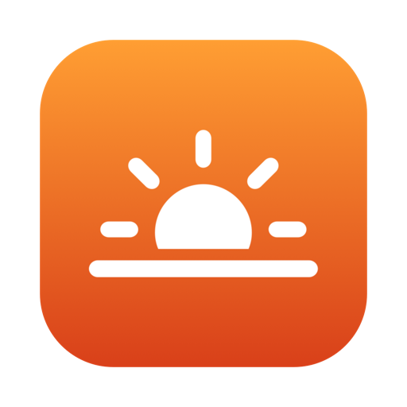

Late night thoughts
It's 11:40 PM and the screen still looks like noon. Every white page is a small sunrise.
BlueGreenRed

Dozelight DownloadEarly access for macOS
Night Shift stops at 2700K. Dozelight keeps going, down to candlelight and pure red, and follows your bedtime so your screen winds down with you.
14-day free trial with every feature · macOS 13 or later · Apple silicon and Intel
Try it
This is a simulation in your browser. The real app tints your whole display, and the Touch Bar too.
It's 11:40 PM and the screen still looks like noon. Every white page is a small sunrise.
Features
Night Shift tops out at 2700K. Dozelight adds warmth on top of it, down to 1000K, with presets from Warm to Ember.
Removes blue and green completely, leaving the gentlest light a screen can make. Dim the red to taste.
Auto mode warms the screen gradually through the evening, switches to red after bedtime and fades back before you wake.
Night Shift ignores the Touch Bar. Dozelight tints it to match your screen, or gives it its own slider.
In deep red the arrow gets lost. Turn on a larger pointer and a soft halo, and switch off the keyboard backlight, only when the screen is at its warmest.
Today's dusk and dawn, right in the menu. No location permission needed.
Reacts to Night Shift, your settings and your displays in a fraction of a second. No polling, no lag.
Under 300 KB, no measurable CPU when idle and no tracking. It only goes online to check your license key.
Your night
Blue light is what reads as daytime. With Auto mode, Dozelight lowers it little by little as bedtime gets closer, then keeps only red light through the night, so a 3 AM glance at your screen stays gentle.
Set your own bedtime and wake-up time in the menu.
Compared
| Night Shift | Dozelight | |
|---|---|---|
| Warmest setting | 2700K | 1000K |
| Red only, no blue or green | No | Yes |
| Gradual bedtime schedule | Sunset to sunrise only | Yes |
| Touch Bar | Stays white | Tinted to match |
| Pointer help in the dark | No | Larger pointer and halo |
Early-access price
$9.99one-time purchase
Version 1.2.1 · 0.3 MB · macOS 13 Ventura or later. Payments are handled securely by Polar.
Installing
Dozelight isn't notarized by Apple yet, so the first time you open it, macOS asks you to confirm. You only do this once.
Dozelight.dmg and drag Dozelight into your Applications folder.Leave your email and get a short note when Dozelight gets something new.
FAQ
Any Mac with macOS 13 Ventura or later, Apple silicon or Intel. Touch Bar tinting works on Apple silicon MacBook Pros with a Touch Bar.
It works together with it. Keep Night Shift on its usual schedule and Dozelight adds warmth on top of it. In Auto mode Dozelight follows your own bedtime, even when Night Shift is off.
No. Dozelight only does work when something changes, like Night Shift turning on or you moving a slider. When idle it uses no measurable CPU.
No. The tint is applied by the display itself, so screenshots, recordings and screen sharing keep their true colors.
No. Dozelight has no analytics or tracking. It only goes online to activate and occasionally check your license key, sending just the key and your Mac's name so you can see your activations. Dusk and dawn are estimated from your time zone, so it doesn't need your location either.
No. Dozelight is a comfort tool for using your Mac in the evening. It doesn't diagnose, treat or prevent any condition.
$9.99, once. That's the early-access price. You can try every feature free for 14 days first, and one license covers up to 3 of your Macs.
The tint pauses until you enter a license key. Your settings stay as they are, so everything comes back the moment you activate.
Open License… in Dozelight's menu on the old Mac and click Deactivate This Mac. You can also manage your Macs in the Polar customer portal linked in your receipt.
Yes. If Dozelight isn't right for you, email us within 14 days of your purchase for a full refund. See the refund policy.
Dozelight isn't notarized by Apple yet, so macOS asks you to confirm once. Follow the install steps above. Future versions will be notarized.